الطريقة المجرّبة للتغلب على المادة
- كل فصل = موضوع واحد من مواضيع الامتحان، وكل بطاقة فيها صورة حقيقية من الدكتور + شرحها. ومع الرسومات النظيفة 📐 بتقدر تقرأ الدائرة بوضوح حتى لو خط السبورة صعب.
- اقرأ الشرح، ثم غطِّ صندوق الحل وحاول حل التدريب بنفسك على ورقة — هذا أهم سطر في الدفتر كله.
- افتح الحل وقارن خطوة بخطوة. غلطة واحدة؟ أعد المحاولة بعد ساعة.
- الفصول المعلَّمة بـ⭐ سؤال امتحاني هي التي الدكتور نفسه لمّح أنها تأتي بالامتحان — ابدأ فيها.
- قبل النوم في ليلة الامتحان: راجع ورقة القوانين الذهبية والأخطاء التي تكلّف درجات في آخر الدفتر.
المصادر المعتمدة في هذا الدفتر: كل صور الدكتور — الستون من المذكرات والخمس عشرة من السبورة الصفية (11 و13 و14 أكتوبر) وكلها نطاق الامتحان — ومُطابقة ومُراجَعة مع المصادر الثانوية كلها: شرائح المحاضرات، الدليل الشامل السابق، وملفات المودل. كل رقم في أمثلة التدريب تحقّقنا حسابياً منه قبل ما ينزل بالملف، وصور السبورة صارت مدموجة داخل فصولها بحسب موضوعها.
أول صورة بالسبورة ما فيها أي قانون دوائر — فيها البادئات. أي مسألة امتحان ما رح تُحل صح إذا غلطت بتحويل milli وmicro وkilo. اجعل هذه الصورة أول شي تحفظه.
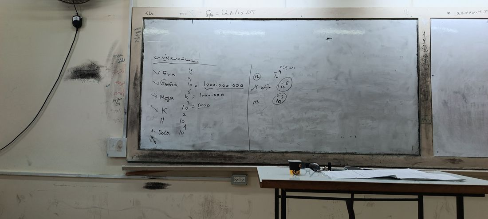
البادئة = معامل ضرب نلصقه بالوحدة كي نتعامل مع أرقام صغيرة أو كبيرة بسهولة. الدكتور رتّبها من الأكبر للأصغر: Tera ثم Giga ثم Mega ثم Kilo ثم Hecto ثم Deka، وفي الجهة الثانية للوحدات الأصغر: deci وسنتي وmilli (10-3) وmicro (10-6) وnano (10-9) وpico (10-12). لاحظ بالصورة إن الدكتور كتب Gega — الإملاء الصحيح Giga بس المهم القيمة: 109.
أهم استخدام عملي: التيار يقاس عادة بـmilliamp أو microamp، والمقاومة بكيلو أوم أو ميغا أوم. قبل أي حساب في أي مسألة، حوّل كل الأرقام لوحدتها الأساسية (أمبير، أوم، فولت) — هذه الخطوة اللي بتفصل بين علامة كاملة وعلامة ناقصة.
- (أ) 47 × 106 = 47,000,000 Ω
- (ب) 330 µA = 330 × 10-6 A = 0.33 mA
- (ج) 2.2 × 1000 = 2200 Ω
- (د) 0.47 × 10-9 F = 470 × 10-12 F = 470 pF
ثلاث صور متتالية (02–04) لنفس الصفحة تقريباً: الدكتور يبني من الصفر مفهوم الشغل = قوة × مسافة، وصولاً لاشتقاق 1 kWh = 3600 kJ — وهو تحويل يتكرر بالامتحانات كثيراً.


الصفحة تبدأ بمثال سريع على جمع تيارين بوحدات مختلفة: 50 µA + 10 mA. القاعدة: وحّد الوحدة أولاً. 50 µA = 0.05 mA فالناتج 10.05 mA = 0.01005 A. بعدها يشرح الدكتور «قانون الواط»: الشغل W = F·d بوحدة الجول، والقدرة = الطاقة ÷ الزمن، فتصير الطاقة E = P·t وفي الدوائر E = I²R·t.
ثم التحويلات الحرارية والعملية: 1 cal = 4.18 J، ووحدة فاتورة الكهرباء kWh (كيلوواط-ساعة) تساوي 3600 kJ ≈ 860 kcal.
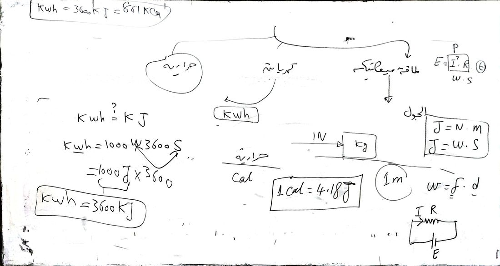
الاشتقاق مكتوب بالكامل: kWh = 1000 W × 3600 s = 1000 J × 3600 = 3600 kJ. احفظ المنطق: «كيلو» تعني ×1000، و«ساعة» تعني 3600 ثانية. الدائرة المرسومة أسفل اليمين (مصدر E مع مقاومة R على التوالي) هي التطبيق: الطاقة المتبددة بالمقاومة = I²R لكل ثانية.
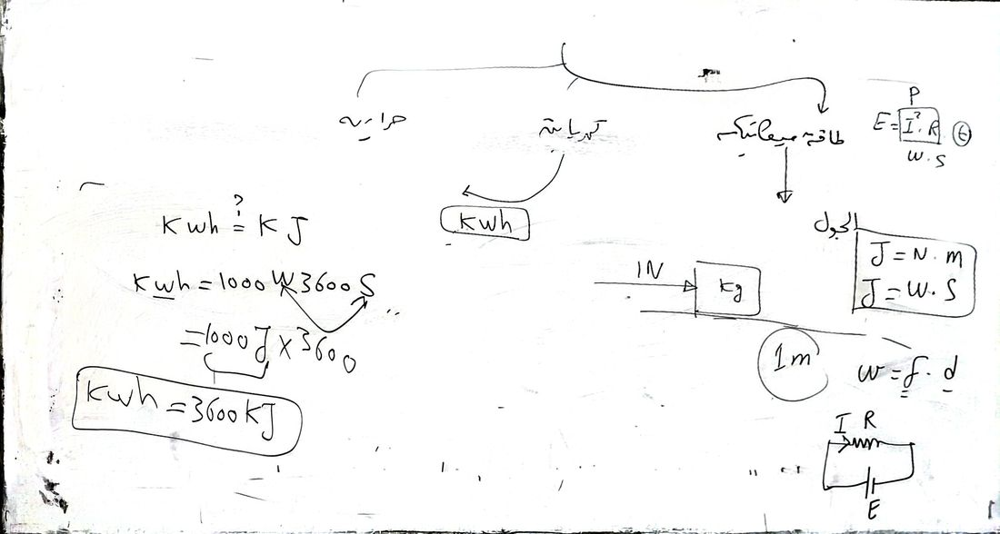
لا جديد حسابياً — لكنها أوضح لقطة لعناوين الصفحة بالعربي (قدرة / طاقة / وحدات) ولعلاقة E = I²R بوحدة W·s. استخدمها للمراجعة السريعة: إذا فهمت هذه الصفحة، فص2 وص3 وص4 انتهت كلها.
- (أ) E = P·t = 2000 W × 3 h = 6000 Wh = 6 kWh
- (ب) 6 × 3600 = 21,600 kJ
- الجمع: 25 µA = 0.025 mA ← 5 + 0.025 = 5.025 mA
أربعة صور (05–08): قانون أوم بصيغه وشرطه، مثلث الحفظ، تعريف الكولوم، علاقة الشحنة بعدد الإلكترونات، وعوامل المقاومة. كلها أساس أي مسألة قادمة.
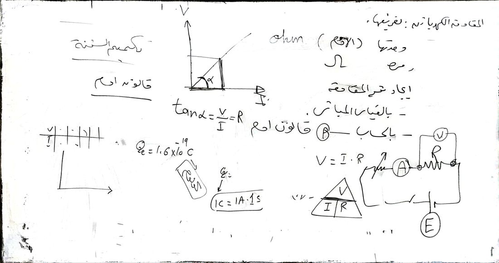
القانون: V = I × R بشرط مكتوب على السبورة بحروف واضحة: «إذا ثابتة درجة الحرارة» — لأن المقاومة تتغير مع الحرارة (سنتكلم عنها في ف4). الرسم البياني V ضد I خط مستقيم ميله tan α = V/I = R: يعني المقاومة هي ميل الخط.
مثلث الحفظ: V فوق، I وR تحت — غطّ المطلوب يظهر لك القانون. ثم تعريف الكولوم: 1C = 1A × 1s (الشحنة التي تمر إذا سار تيار 1 أمبير لثانية واحدة). وفي الرسم أسفل: الأميتر يوصل على التوالي ليpass منه التيار، والفولتميتر على التوازي عبر طرفي المقاومة — غلطة توصيل = صفر قراءة بالتجربة العملية.
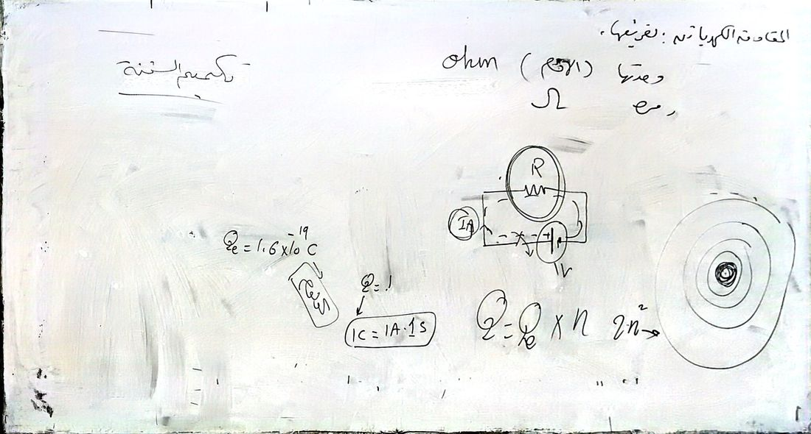
شحنة إلكترون واحد: Qe = 1.6 × 10-19 C، فالشحنة الكلية = شحنة الإلكترون × عددهم: Q = Qe × N ومنها N = Q / Qe. مثال السبورة: تيار 1A لثانية واحدة → Q = 1 C → عدد الإلكترونات N = 1 / 1.6×10-19 = 6.25 × 1018 إلكترون. رقم ضخم — ولهذا نتعامل بالكولوم مش بعدّ الإلكترونات.
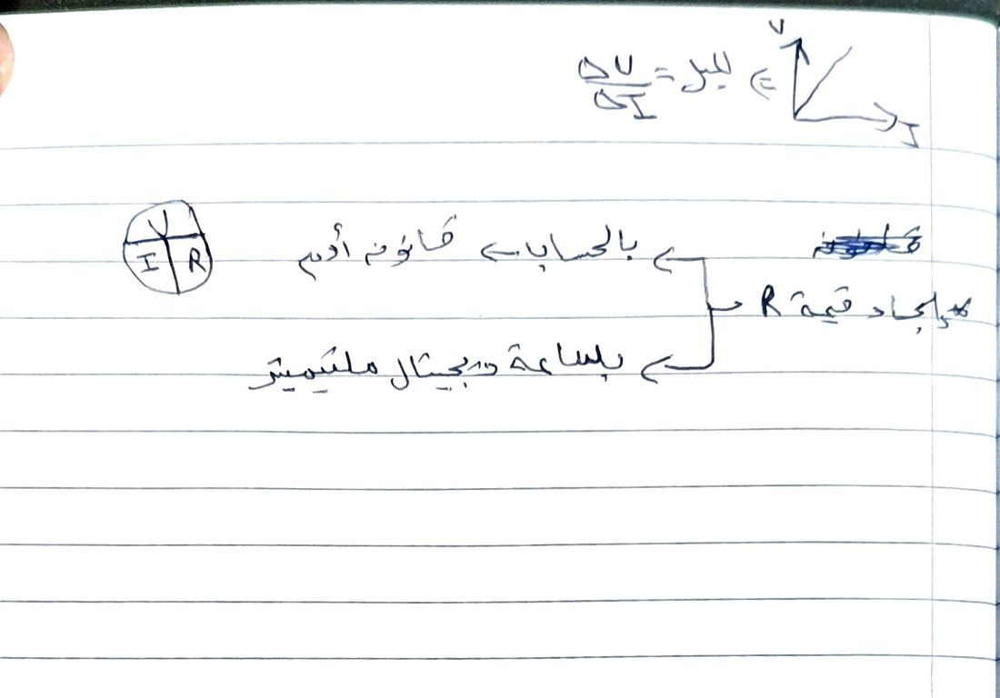
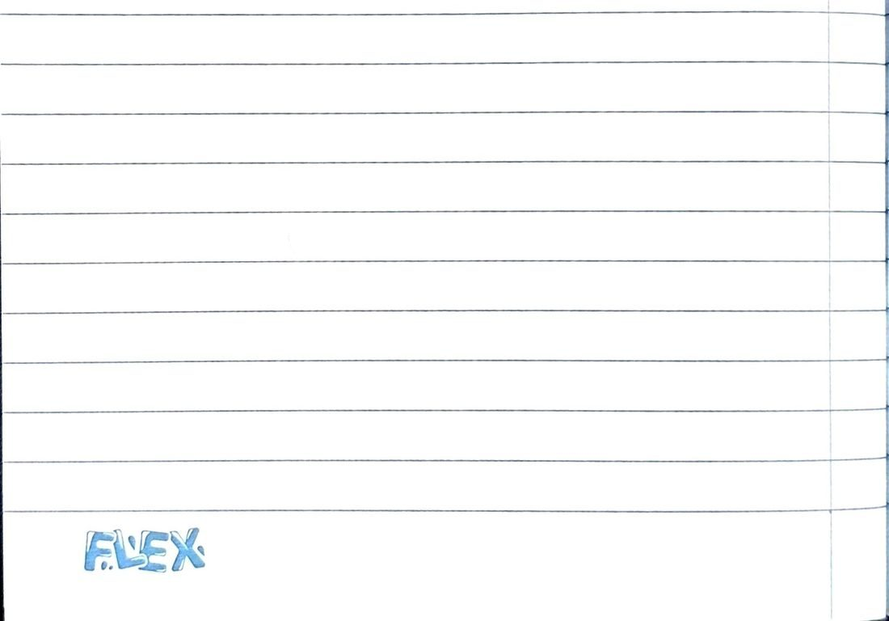
الإجابة النموذجية التي يريدها المصحح: (1) نوع مادة الموصل (المقاومية ρ — نحاس أقل من حديد)، (2) طول الموصل — كل ما طال زادت المقاومة، (3) مساحة المقطع — كل ما عرض زادت قلّت، (4) درجة الحرارة — للمعادن كل ما سخنت زادت. تُجمع كلها بقانون:
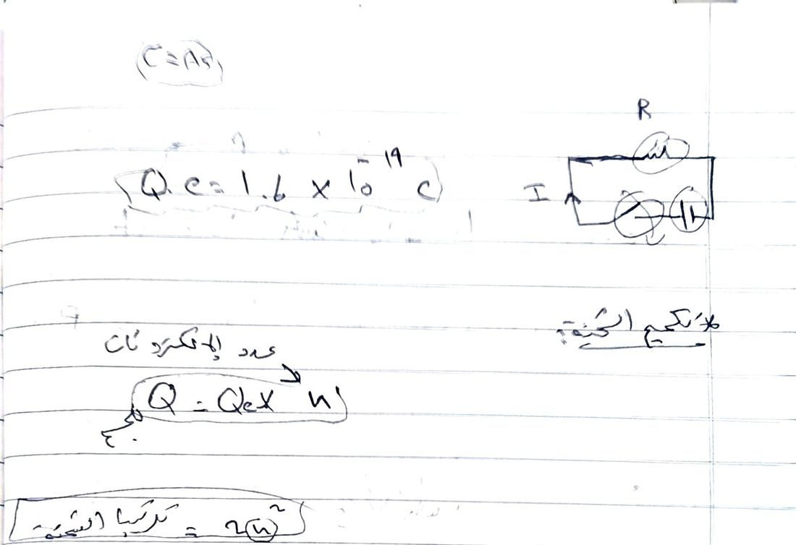
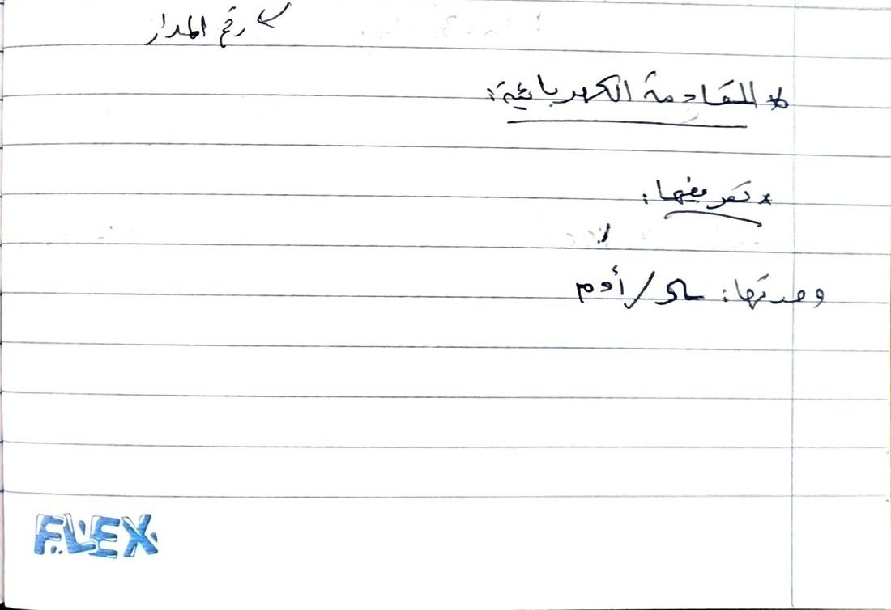
هذه الصورة ضبابية ومتداخلة الخط (فحصناها بقراءتين مركّبتين). الواضح فيها فقط: تكرار Q = Qe × N ورسم دائرة فيها R وL وC مع رمز ω (مواضيع AC — خارج نطاق نصف الفصل الأول). نصيحتي: لا تضيّع وقتك عليها — كل محتواها الموثوق مغطى في الصور 05–07.
- (أ) Q = I·t = 2 × 300 = 600 C ← N = 600 / 1.6×10-19 = 3.75 × 1021 إلكترون
- (ب) R = ρL/A: L تضاعفت (×2) وA تضاعفت (×2) ← الناتج لا يتغير: R' = ρ(2L)/(2A) = R
الصور 09 و10 و12 و13 كلها لنفس السبورة من زوايا متتالية — وهذا بحد ذاته رسالة: الدكتور صوّرها أربع مرات لأنها مهمة. المنطق: عند التشغيل يكون الملف بارداً فمقاومته صغيرة، فيسحب تياراً أكبر بكثير من تيار التشغيل الطبيعي.
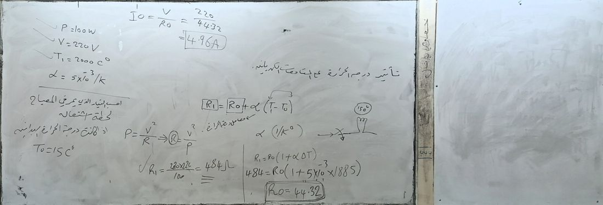
- الخطوة 1 — مقاومة الملف وهو حامٍ (R₁): من قانون القدرة P = V²/R نعكسه: R₁ = V²/P = 220×220/100 = 484 Ω. هذه مقاومة الملف عند 2000°.
- الخطوة 2 — ننزل للمقاومة الباردة (R₀): علاقة التغير الخطي مع الحرارة: R₁ = R₀(1 + α·ΔT) حيث ΔT = 2000 − 15 = 1885. نعوّض: 484 = R₀(1 + 5×10-3 × 1885) ← 484 = R₀ × 10.425 ← R₀ ≈ 46.4 Ω بالحساب الدقيق (والدكتور كتب على السبورة 44.32 Ω — راجع التنبيه تحت).
- الخطوة 3 — تيار البدء: I₀ = V/R₀ = 220 / R₀ — على السبورة: 220/44.32 = 4.96 A (وبالقيمة الدقيقة 46.4 يصير ≈ 4.74A).
الفكرة الفيزيائية: تيار البدء أكبر من تيار التشغيل الطبيعي (I₁ = 100/220 ≈ 0.45A) بعشرات المرات لأن الملف بارد ومقاومته ضعيفة — لهذا تنطفئ الأنوار لحظة تشغيل السخان!
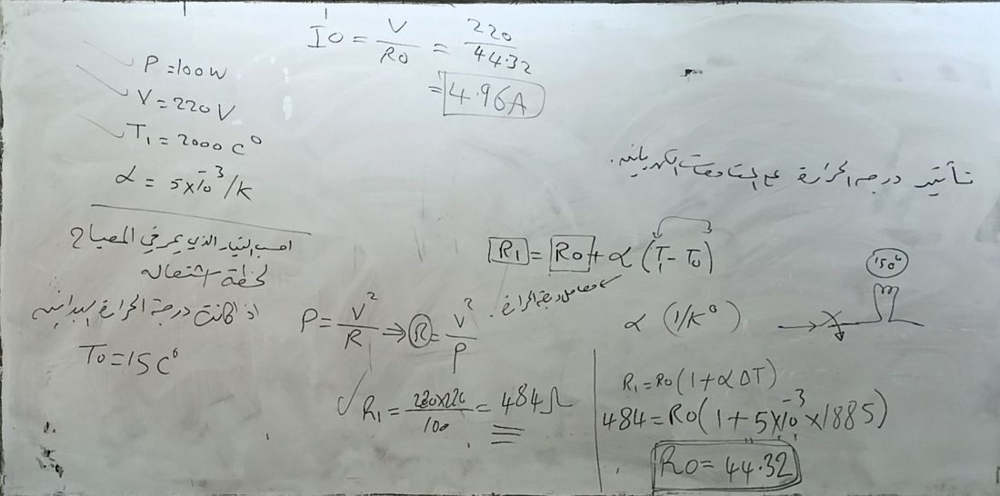
تعرض قائمة المعطيات منظمة بعلامات ✓ (P=100W، V=220V، T₁=2000°، α=5×10⁻³/K، T₀=15°) وصيغة بديلة مكافئة: R₁ = R₀ + α(T₁−T₀). لاحظ في رسم الدائرة ملف تسخين حلزوني ودرجة حرارة قرب الملف — هذا هو الشكل المتوقع في ورقة السؤال.
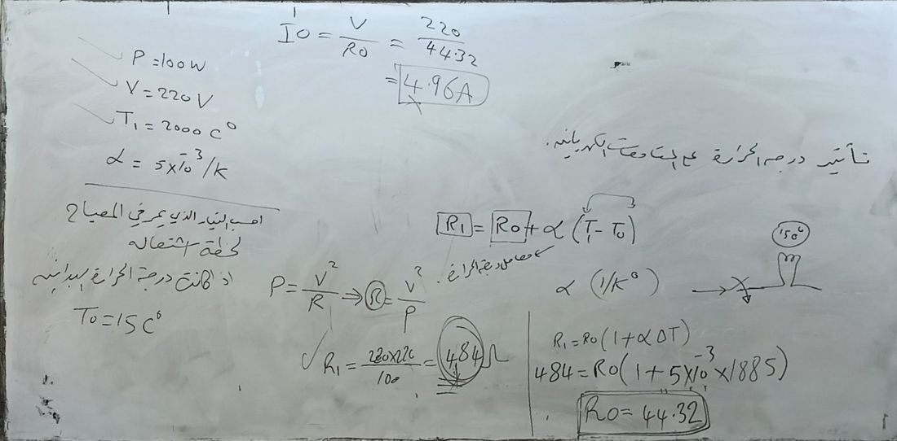
لا جديد — لكنها أفضل لقطة تُظهر ترتيب الحل النهائي: أول R₁ من القدرة، ثم R₀ من علاقة الحرارة، ثم I₀ من قانون أوم. احفظ هذا الترتيب: قدرة ← حرارة ← أوم.
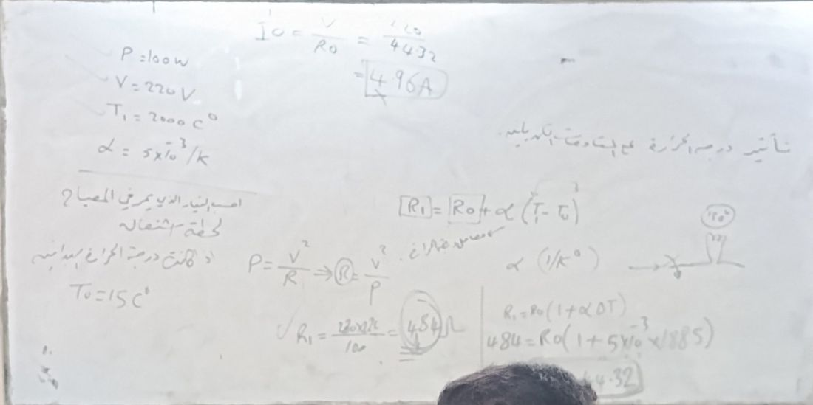
لأن فيها كلمات الدكتور الحرفية: «غالباً ما يكون سؤال امتحاني» و«احسب التيار الابتدائي للمقاومة» — أي أن نمط السؤال جاهز عندك: يعطونك P وV وT₁ وT₀ وα ويطلبون I₀ أو R₀. مارس التدريب تحت حتى تحلها في أقل من 3 دقائق.
- R₁ = V²/P = 220²/200 = 242 Ω
- ΔT = 1500 − 25 = 1475 ← 242 = R₀(1 + 4×10-3×1475) = R₀ × 6.9 ← R₀ ≈ 35.07 Ω
- I₀ = 220 / 35.07 ≈ 6.27 A
ثلاث صور (11، 15، 16) تُبنى كالتالي: صورة الاشتقاق، ثم المثال العددي نفسه مرة بملاحظات الدكتور ومرة بعنوان «مثال على الدوائر المتوالية». القانون الذهبي: V₁ = E·R₁/(R₁+R₂).
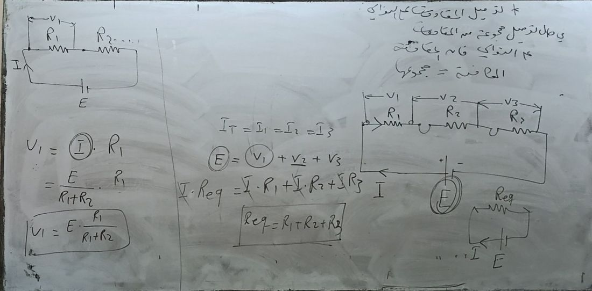
الدكتور يبدأ بملاحظة حكيمة: «توزيع فرق الجهد على كل مقاومة ومجموعها = المصدر، والتيار ثابت». القوانين تُشتق هكذا: التيار واحد في كل نقطة I_T = I₁ = I₂ = I₃ (طريق واحد فقط)، ثم KVL: E = V₁+V₂+V₃، نعوّض كل جهد بقانون أوم: I·R_eq = I·R₁ + I·R₂ + I·R₃ نقسم على I: R_eq = R₁+R₂+R₃.
وقسمة الجهد: جهد أي مقاومة = نسبتها من المجموع × المصدر: V₁ = [E/(R₁+R₂)]·R₁ — أي V₁ = E·R₁/(R₁+R₂) (المؤطر بالسبورة). لاحظ: المقاومة الأكبر تأخذ جهداً أكبر.
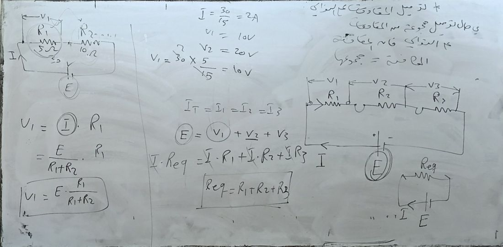
- R_eq = 5 + 10 = 15 Ω
- I = 30/15 = 2 A
- V₁ = 2×5 = 10 V — أو مباشرة بقسمة الجهد: V₁ = 30×5/15 = 10 V ✓ (الطريقتان نفس النتيجة)
- V₂ = 30 − 10 = 20 V (التحقق: 10+20=30 ✓)
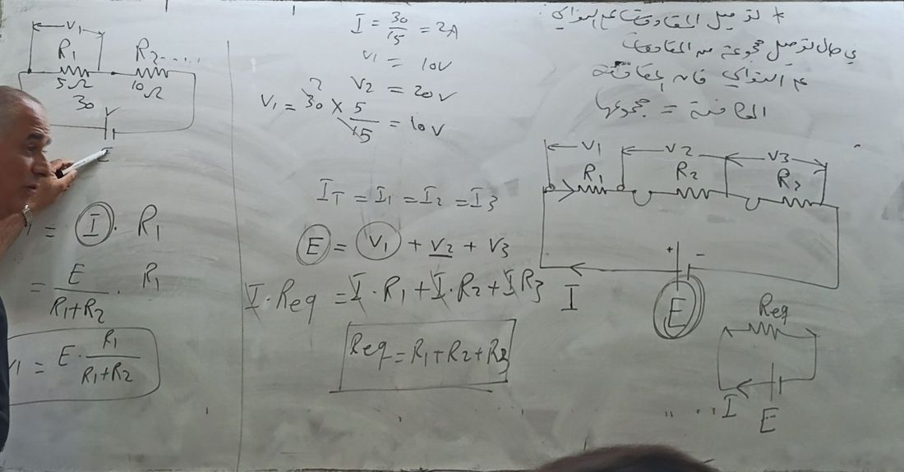
نفس الحسابات (I=2A، V₁=10V، V₂=20V) لكن مع تسمية المكونات: المصدر=بطارية، والمقاومات توالياً، وثلاث دوائر مرسومة (الأصلية، العامة، المكافئة). هذه الصورة مفيدة لسؤال «اشرح/ارسم» بالامتحان النظري.
- R_eq = 15+30 = 45 Ω ← I = 45/45 = 1 A
- V₁ = 1×15 = 15 V — V₂ = 1×30 = 30 V
- قسمة الجهد مباشرة: V₁ = 45×15/45 = 15 V ✓ — V₂ = 45×30/45 = 30 V ✓
أكثر موضوع مُصوَّر بعد المسألة الكبرى: 7 صور (14، 17–22). المثال المركزي يتكرر 4 مرات: R₁=3Ω، R₂=6Ω، R₃=2Ω توازياً ← R_eq=1Ω، ثم اشتقاق قسمة التيار بثلاث لقطات.
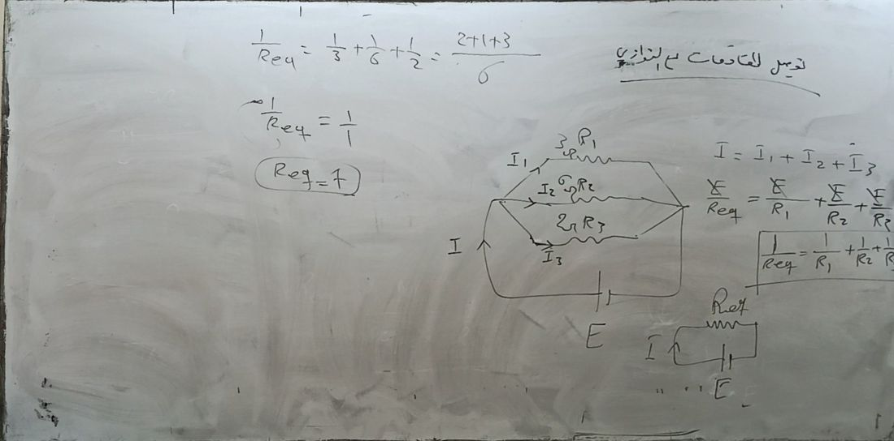
في التوازي الجهد موحد على كل الفروع، والتيار يتوزع: I = I₁+I₂+I₃ (KCL). نعوّض I₁=E/R₁... إلخ ونقسم على E: 1/R_eq = 1/R₁ + 1/R₂ + 1/R₃. التطبيق: 1/R_eq = 1/3 + 1/6 + 1/2 = (2+1+3)/6 = 6/6 = 1 ← R_eq = 1 Ω. لاحظ حيلة توحيد المقامات (القواسم 3، 6، 2 → المقام المشترك 6). والنتيجة منطقية: المكافئ (1Ω) أصغر من أصغر مقاومة (2Ω) — قاعدة تحقق ذهبية لأي توازي.
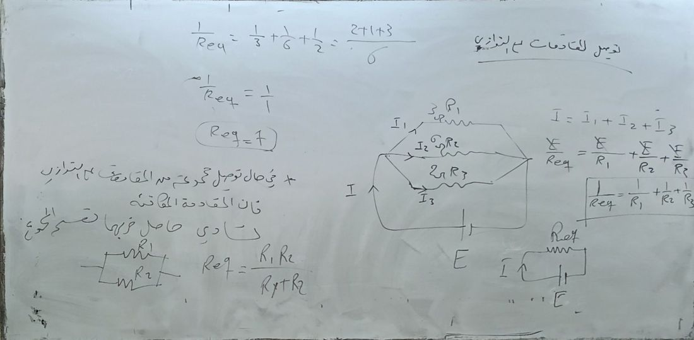
نفس النتيجة R_eq=1Ω، وتضيف القانون الخاص بمقاومتين: R_eq = R₁R₂/(R₁+R₂) (حاصل الضرب على المجموع) — اختصره بذهنك: «الضرب فوق، الجمع تحت». مع رسم توازي مقاومتين ودائرة مكافئة.
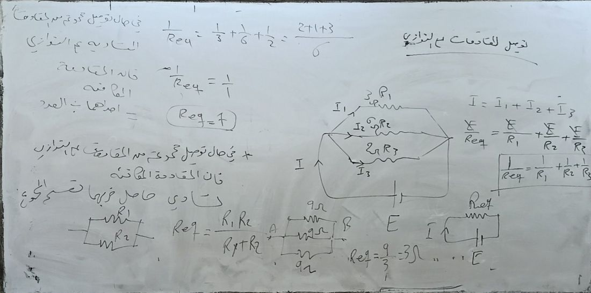
مثال ثانٍ سريع: ثلاث مقاومات متساوية 9Ω بين نقطتين A و B: R_eq = 9/3 = 3 Ω (قانون n متساوية). هذه أسهل نقاط الامتحان إذا حفظت القاعدة. الرسم بين A وB مهم لأن نفس الفكرة تدخل المسألة الكبرى (ف7).
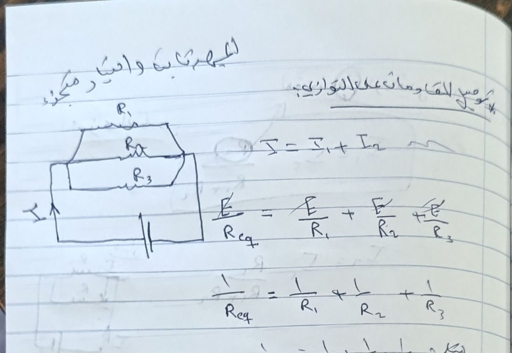
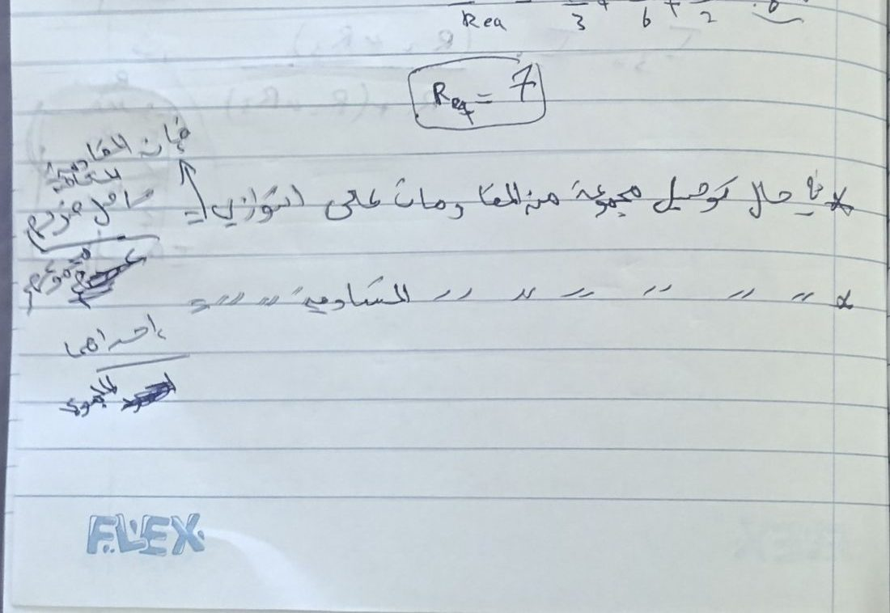
نسخة المذكرات لنفس الحل (R_eq=1Ω) بعنوان رسمي «مثال لمقاومات متوازية (الإجابة)» — تؤكد أن هذا المثال مثال مرجعي في المادة وليس خربشة سبورة. الجزء السفلي بخط سريع عن توصيل منزلق (ريوستة) — تفصيل تجربة عملية.
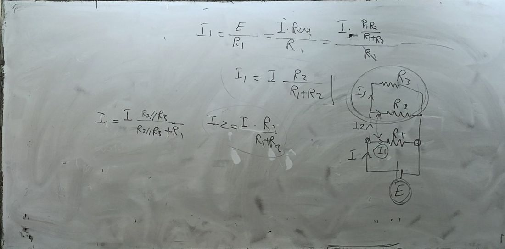
نبدأ من I₁ = E/R₁ (لأن الجهد على الفرعين موحد). نعوّض E = I·R_eq حيث R_eq = R₁R₂/(R₁+R₂): تصير I₁ = I·R₁R₂/[(R₁+R₂)·R₁] — تقصر R₁ وتبقى:
I₁ = I · R₂/(R₁+R₂)
انتبه للعكس الشهير: تيار أي فرع = التيار الكلي × مقاومة الفرع الآخر على مجموعهما! التيار يمشي من الطريق الأسهل — فرع أقل مقاومة يسرق تياراً أكبر. وللدائرة المركبة (R₁ توالي مع R₂∥R₃): I₁ = I·(R₂∥R₃)/(R₁ + R₂∥R₃) — حوّل التوازي لقيمة واحدة أولاً ثم قسّم.
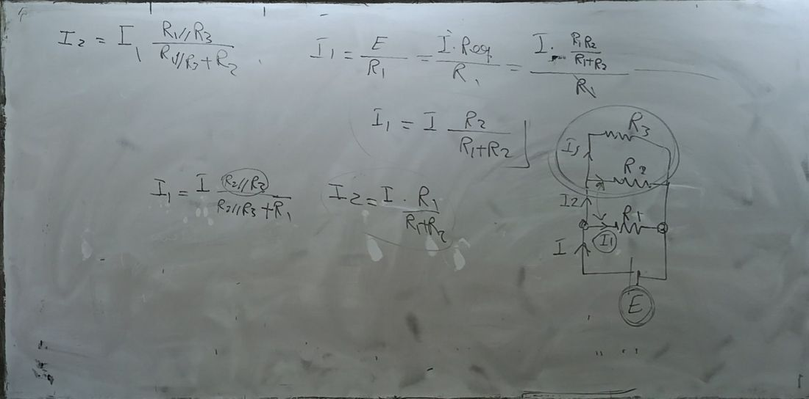
نفس الصيغ بصياغة أوفى مع حصر الدكتور على البسط: I₂ = I₁·(R₁∥R₃)/(R₁∥R₃+R₂). القاعدة العامة: البسط دائماً = مكافئ الفروع الأخرى (كل شي عدا فرعك)، والمقام = البسط + مقاومة فرعك.
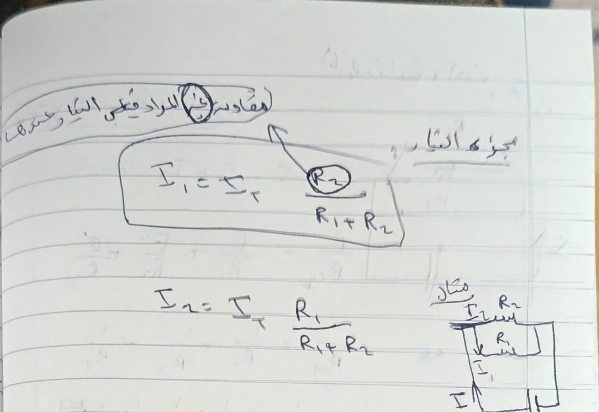
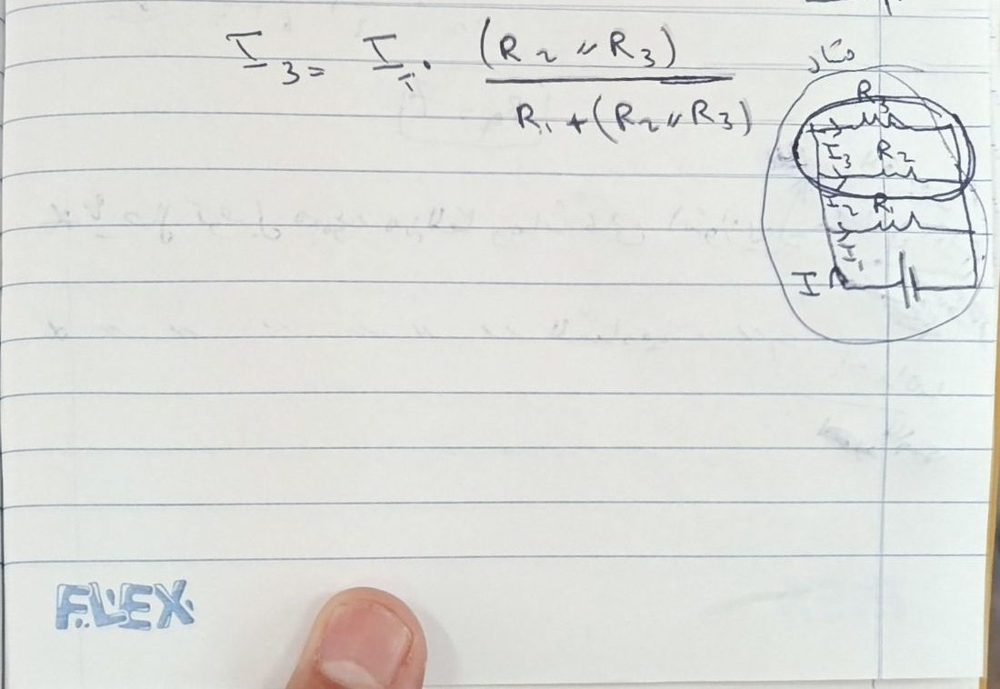
صفحة تلخيص نظيفة بالعناوين: القاعدة البسيطة (مقاومتان متوازيتان) والقاعدة المركبة (فرع توالي قبل التوازي). استخدمها كورقة مراجعة سريعة قبل الامتحان مباشرة.
- (أ) 1/R_eq = 1/4 + 1/6 + 1/12 = (3+2+1)/12 = 6/12 = 1/2 ← R_eq = 2 Ω
- (ب) I(4Ω) = 6 × 12/16 = 4.5 A — I(12Ω) = 6 × 4/16 = 1.5 A
- تحقق: 4.5+1.5 = 6 A ✓ والجهود متساوية: 4.5×4 = 18V = 1.5×12 ✓
صور 23–29 و31 و33 كلها لنفس الدائرة (مصدران متعاكسان وشبكة مقاومات): يعطيك الدكتور السؤال بأجزائه الثلاثة: ① أوجد التيار ② أوجد Vxy ③ أوجد القدرة المتبددة — ويحلها عبر عشر لقطات. هذه هي المسألة التي يجب أن تحلها بنظرك المغلق.
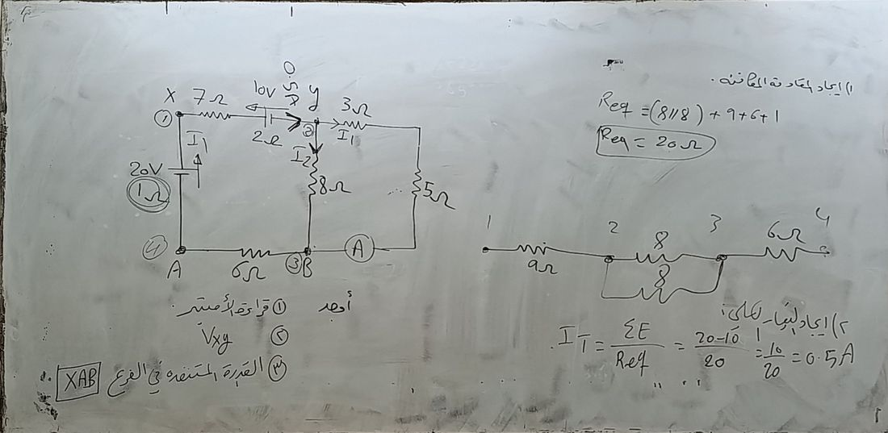
- مصدر 20V يسار (له مقاومة داخلية 1Ω)، ومصدر 10V أعلى بقطبية معاكسة (لهذا نطرحه).
- بين عقدة X وy: مقاومة 7Ω. مع المصدر 10V فرع فيه 2Ω.
- ثم تفرع: 8Ω موازياً مع (3Ω + 5Ω توالياً = 8Ω).
- أسفل: 6Ω بين A وB، وأميتر A في الفرع السفلي.
- الأسئلة: ① إيجاد التيار ② Vxy ③ القدرة المتبددة.
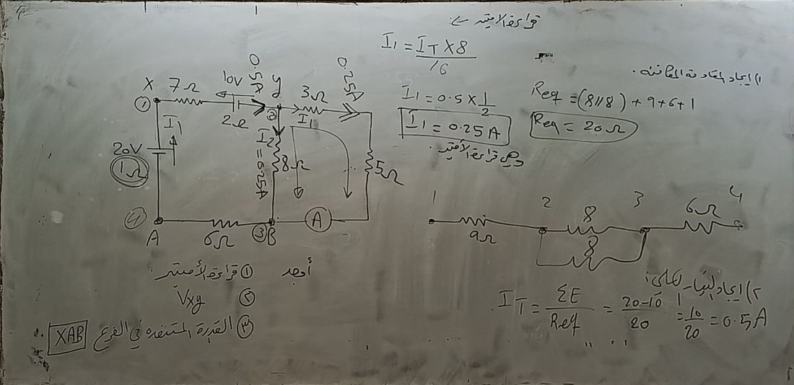
- انكماش (تبسيط): 8 ∥ 8 = 4 Ω ← R_eq = 4 + 9 + 6 + 1 = 20 Ω (الرقم 9 = مجموع 7+2).
- التيار الكلي بقانون كيرشوف: I_T = ΣE/R_eq = (20 − 10)/20 = 0.5 A — نطرح لأن المصدرين متعاكسان.
- قسمة التيار عند التفرع: I₁ = I_T × 8/16 = 0.5 × ½ = 0.25 A في كل فرع من الفرعين (8Ω و 8Ω) — والفرعان متساويان فالقسمة نصفين.
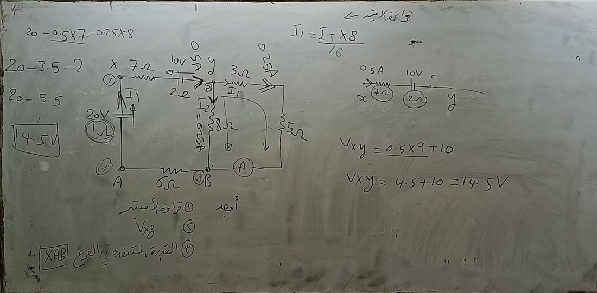
امشِ من x إلى y واجمع: هبوط على (7+2)=9Ω بتيار 0.5A، ثم صعود على المصدر 10V: V_xy = 0.5×9 + 10 = 4.5 + 10 = 14.5 V
ابدأ من 20V واطرح الهبوطات: 20 − 0.5×7 − 0.25×8 = 20 − 3.5 − 2 = 14.5 V ✓ تطابق الطريقتين = الحل صحيح قطعاً.
Vxy = 14.5 V بطريقتين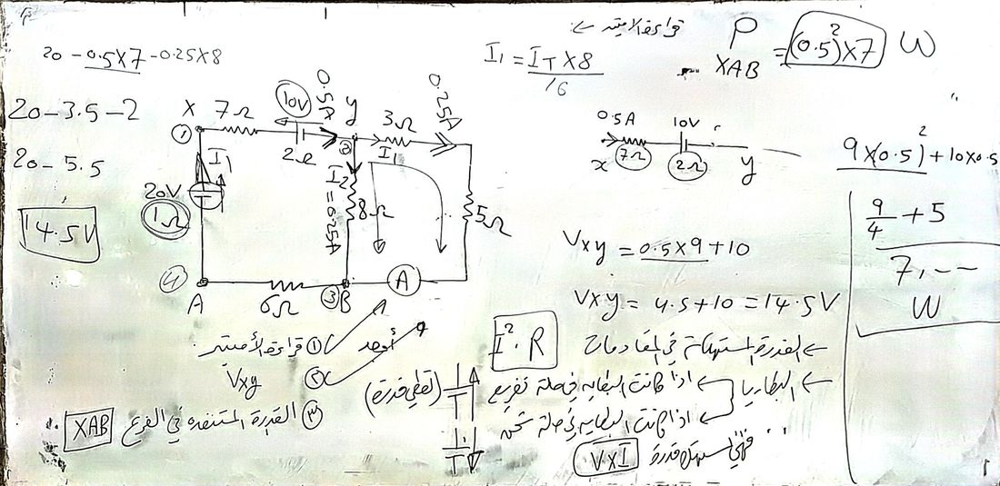
قانونا القدرة المعتمدان على السبورة: P = I²·R و P = V×I. المطلوب القدرة المستنزفة في مقطع XAB — أي مقاومة 7Ω بتيارها الكلي 0.5A: P_XAB = (0.5)² × 7 = 0.25 × 7 = 1.75 W.
وتضيف اللقطة قواعد الإشارة التي تسأل عنها الدكتور نظرياً: عكس اتجاه التيار ← تُعكس إشارة القدرة (مصدر يشحن بدل ما يبدّد)، وعكس قطبية الجهد ← عكس الإشارة أيضاً. اذكرها بسطر واحد في حلّك تكسب نقطة التميّز.
P_XAB = 1.75 W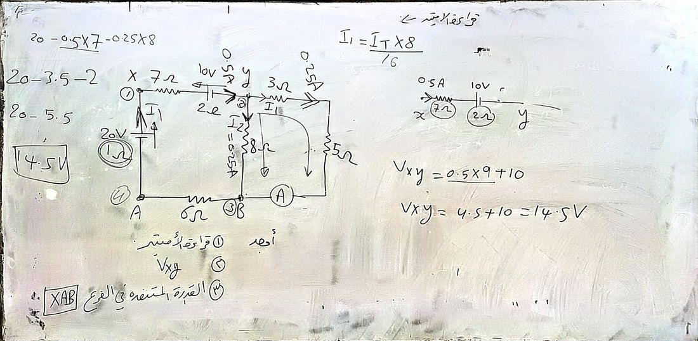
هذه أوضح لقطة للدائرة: كل مقاومة وقيمتها، والتيار 0.5A عبر 7Ω و0.25A عبر 8Ω، مع الحسابات الجانبية (14.5V مؤطرة). اعتمدها كـ«خريطة» ترجع لها أثناء الحفظ.
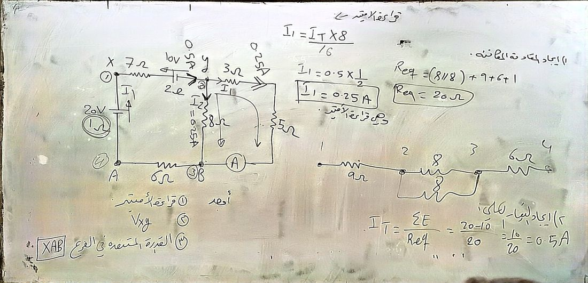
تعرض خطوات «الانكماش» مرقمة (توازي ثم جمع توالي) وهي نفسها في تدريبنا، ويظهر فيها خطأ الكتابة 26Ω بينما الحساب الفعلي استمر بـ20Ω. خذ منها منهجية الترقيم: 1) التوازي 2) الجمع 3) KVL 4) القسمة.
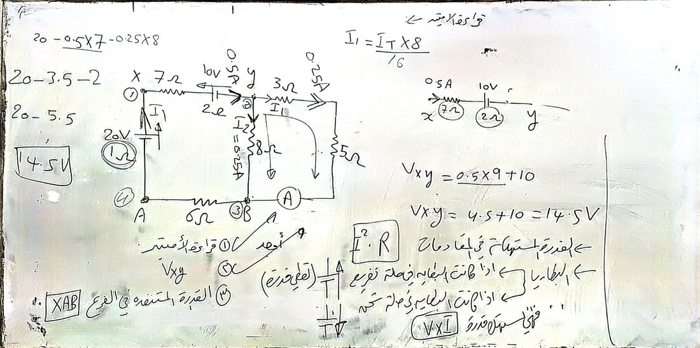
نفس النتائج (0.5A، 14.5V) مع فولتميتر و«تجربة ربط كيرشوف» و«بوربوينت» و«كتاب أسئلة» — مصادر الدكتور المعلنة. ملاحظة «عند إغلاق المفتاح» تذكّرك أن بعض الأسئلة تضيف مفتاح S: أغلقه أي واصل الحساب عادي، وافتحه أي افصل الفرع.
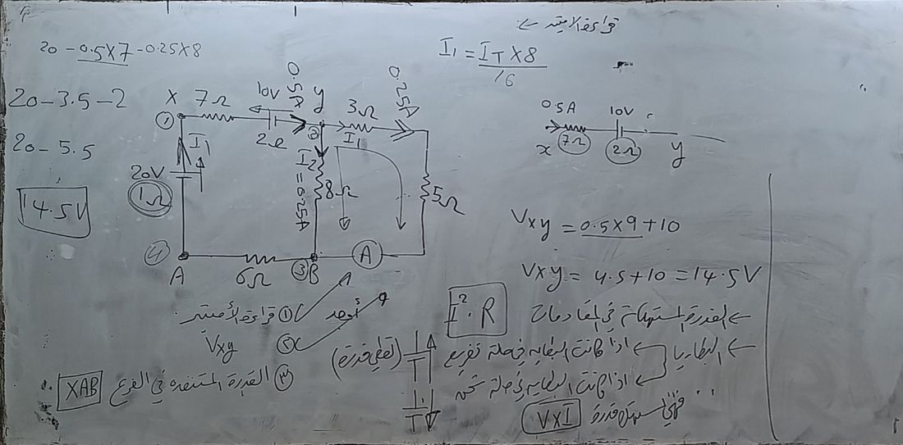
إعادة لنفس حساب Vxy بالطريقتين مع عبارة «عقدة تقسيم التيارات» — تسمية العقدة التي يتفرع عندها التيار. إن سُئلت عن تعريف العقدة: نقطة التقاء ثلاثة فروع أو أكثر.
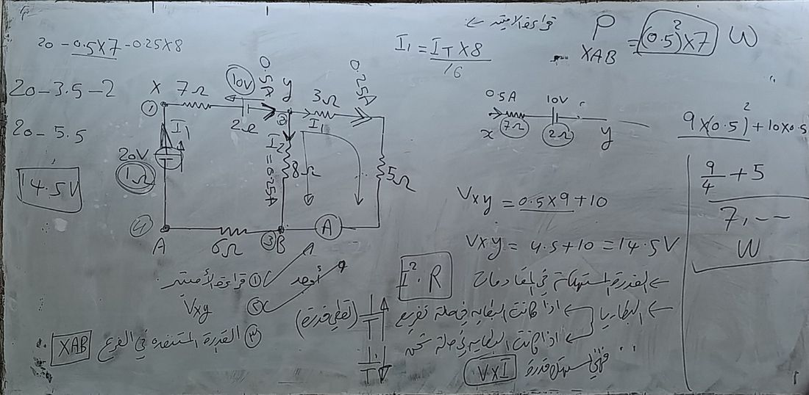
تكرار حساب القدرة 1.75W مع إبراز المقاومة الداخلية 1Ω (المحاطة بدائرة) — وهي جزء من R_eq إجمالاً. تكرار الدكتور لنفس الخطوة = تلميح مزدوج أنها بند امتحاني مستقل.
- R_eq = (8∥8) + 9 + 6 + 1 = 4 + 16 = 20 Ω (كما هي)
- I_T = (40 − 10)/20 = 1.5 A
- I₁ = 1.5 × 8/16 = 0.75 A لكل فرع توازي
- V_xy = 1.5×9 + 10 = 23.5 V — تحقق: 40 − 1.5×7 − 0.75×8 = 40 − 10.5 − 6 = 23.5 ✓
- P(7Ω) = (1.5)² × 7 = 15.75 W
أربع صور (30، 32، 34، 35) لدائرة فيها بطارية تُشحن — وهنا تظهر قراءة الفولتميتر على شحن/تفريغ، وقراءة الأميتر بقسمة التيار. أفكار تجربة عملية محبوبة بالامتحانات.
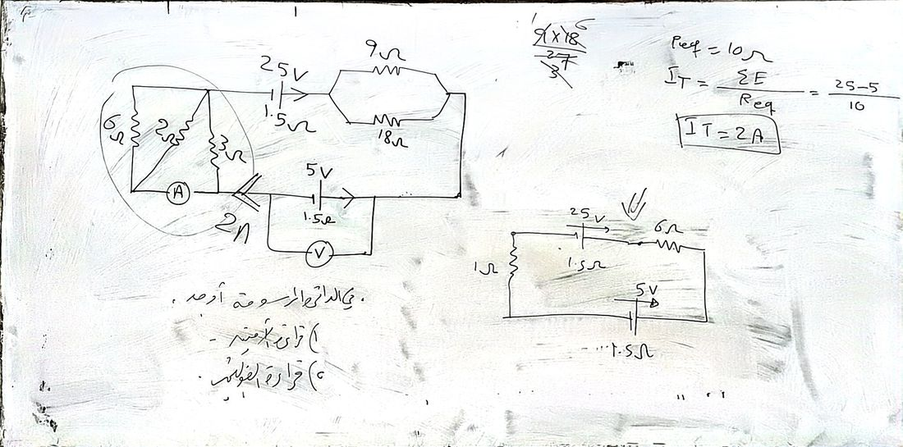
- توازي أعلى اليمين: 9 × 18/27 = 6 Ω
- جمع المسار: R_eq = 6 + 1.5 + 1.5 + ... = 10 Ω (كما كتبها الدكتور — الرقم النهائي المعتمد)
- I_T = ΣE/R_eq = (25 − 5)/10 = 2 A — المصدران متعاكسان فنطرح.
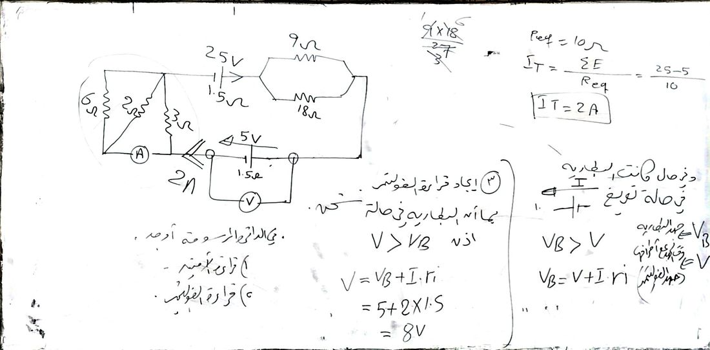
البطارية 5V بمقاومة داخلية 1.5Ω والتيار يدخلها بعكس قطبيتها (تُشحن): جدها الطرفي = قوتها الدافعة + هبوط المقاومة الداخلية: V = V_B + I·r = 5 + 2×1.5 = 8 V.
القاعدة النظرية المكتوبة بالسبورة: عند التفريغ (تغذي الدائرة): V_B > V و V_B = V + I·r. وعند الشحن: V > V_B و V = V_B + I·r. وتضيف الدكتورة وحدات القدرة: واط، كيلوواط، حصان (1hp ≈ 746W).
قراءة الفولتميتر = 8V (حالة شحن)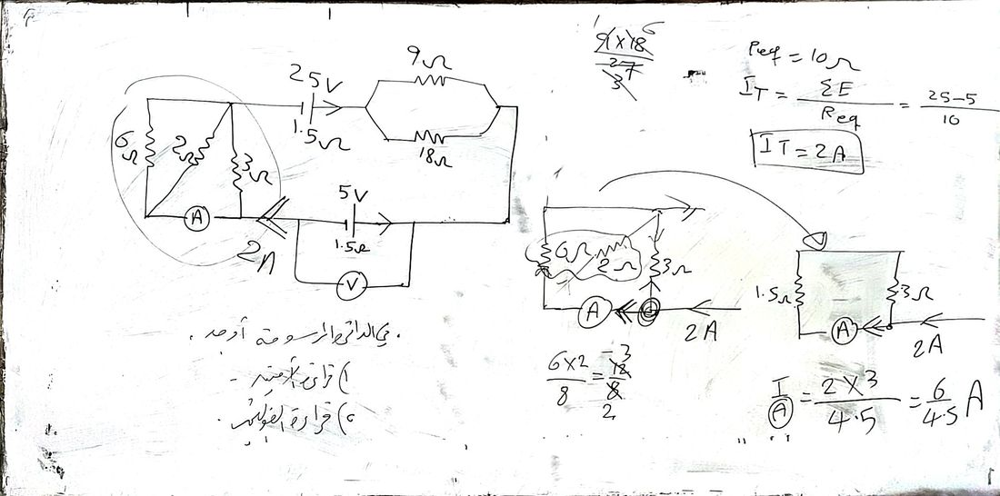
- توازي 6Ω مع 2Ω: R = (6×2)/8 = 1.5 Ω
- أميتر على فرع 3Ω: قسّم التيار الكلي 2A على الفرعين: I(A) = 2 × 3/(1.5+3) = 6/4.5 ≈ 1.33 A — لاحظ البسط مقاومة الفرع الآخر (1.5Ω) وقسمنا على المجموع.
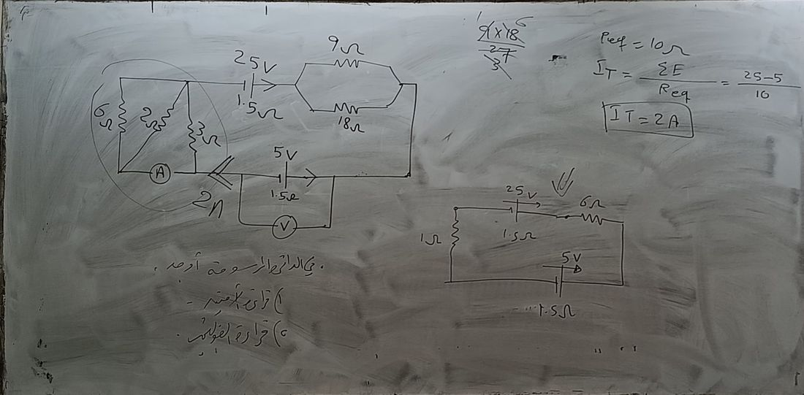
تعرض الدائرة بعد الانكماش: مصدر 25V، مقاومتان داخليتان 1.5Ω، المكافئ 6Ω، وبقية المسار حتى 5V. الرسم المصغّر هذا هو ما تحفظه لتحل المسألة بسرعة في الامتحان.
- 6∥12 = 72/18 = 4 Ω ← R_eq = 4 + 1 + 1 = 6 Ω
- I_T = (36 − 6)/6 = 5 A
- البطارية تُشحن: V = V_B + I·r = 6 + 5×1 = 11 V
صورة 43 تُجهّز منظومة ثلاث معادلات من دائرة 28V و10V — وهي نفس منظومة المسألة التي يعود إليها الدكتور في ثيفنين والتراكب. احفظ طريقة بناء المعادلات الثلاث: KVL لحلقتين + KCL لعقدة.
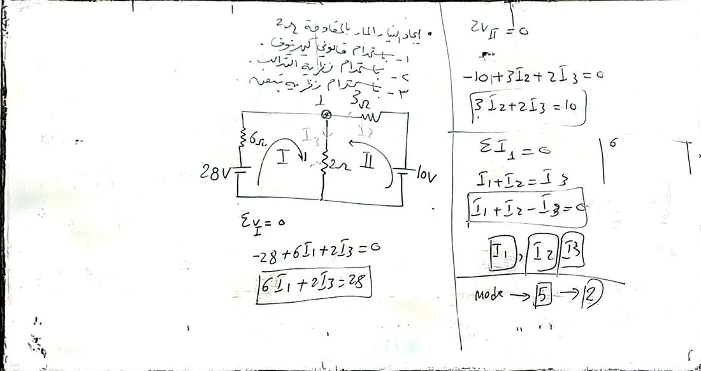
الدائرة: ثلاثة فروع متوازية بين عقدتين — فرع أيسر فيه 28V مع 6Ω، فرع أوسط 2Ω مشترك، فرع أيمن 10V مع 3Ω. نسمّي تيار الحلقة اليسرى I₁ واليمنى I₂ والتيار المار في 2Ω هو I₃ = I₁+I₂.
- الحلقة I (KVL): −28 + 6I₁ + 2I₃ = 0 ← 6I₁ + 2I₃ = 28
- الحلقة II (KVL): −10 + 3I₂ + 2I₃ = 0 ← 3I₂ + 2I₃ = 10
- العقدة (KCL): I₁ + I₂ = I₃ ← I₁ + I₂ − I₃ = 0
- الآلة الحاسبة (كما كتب الدكتور): Mode → 5 → 2 لحل منظومة 3 معادلات.
حل المنظومة فعلياً يعطي: I₁ ≈ 3.33A وI₂ ≈ 0.67A وI₃ = 4A — لاحظ أن تيار 2Ω يساوي 4A، وهو نفس ما يعطيه ثيفنين نظرياً (16/4=4A — انظر ف10). طريقتان تؤكدان بعضهما — هذا بالضبط ما يعجب المصحح.
- 3I₁ + 3I₃ = 12 — 3I₂ + 3I₃ = 6 — I₃ = I₁ + I₂
- بالتعويض: 2I₁ + I₂ = 4 و I₁ + 2I₂ = 2 ← I₁ = 2A، I₂ = 0A، I₃ = 2A
- تحقق: 3×2 + 3×2 = 12 ✓ و 0 + 3×2 = 6 ✓ — التيار I₂=0 صفر! (المصدران متوازنان جهدياً على 3Ω)
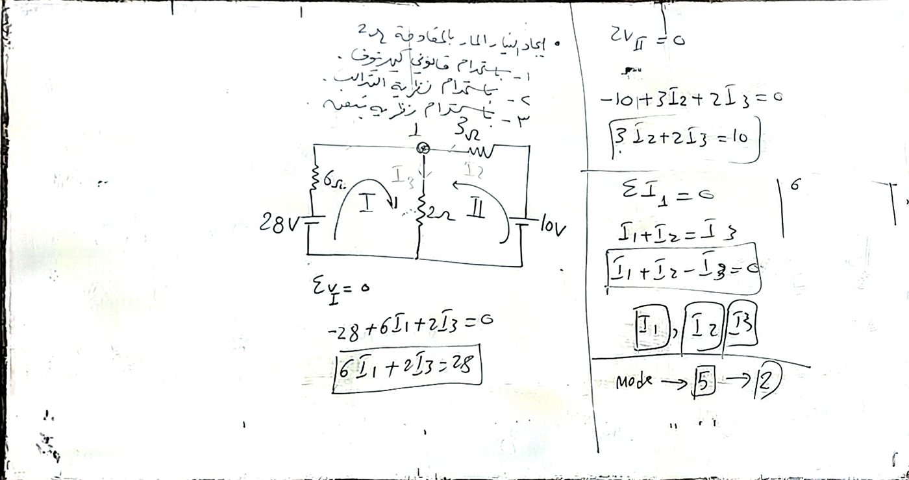
السبورة نفس الشي اللي بالصورة 43 بس بخط الدكتور الحي: معادلة لكل حلقة 6I₁+2I₃=28 و3I₂+2I₃=10 ومعادلة العقدة I₁+I₂=I₃. حلّها بالآلة (Mode 5 ثم 2) أو بيدك — النتيجة I₃=4A وهي نفس نتيجة ثيفنين 16/(2+2)=4A. لما تجيكم المسألة بالامتحان: ارسم الرسم النظيف، سمّ التيارات، اكتب المعادلات الثلاث — نص الدرجة من الترتيب.
الفكرة: أي دائرة معقدة، من نقطتي الحمل، تعادل مصدر Vth توالياً مع Rth. ثلاث خطوات مقدسة: أزل الحمل واحسب Vth ← قصر المصادر واحسب Rth ← I = Vth/(Rth+RL).
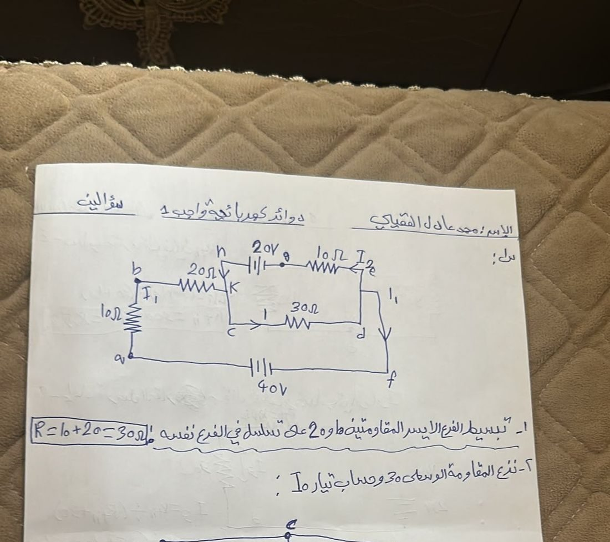
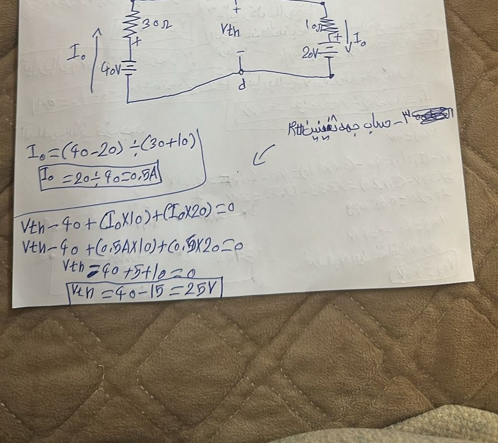
- Rth: نزيل الحمل 30Ω ونقصر المصادر: المسار يبقى 10 + 20 = 30 Ω
- Io: تيار الحلقة بعد إزالة الحمل: Io = (40−20)/(30+10) = 20/40 = 0.5 A
- Vth بـKVL: Vth − 40 + Io×10 + Io×20 = 0 ← Vth = 40 − 5 − 10 = 25 V
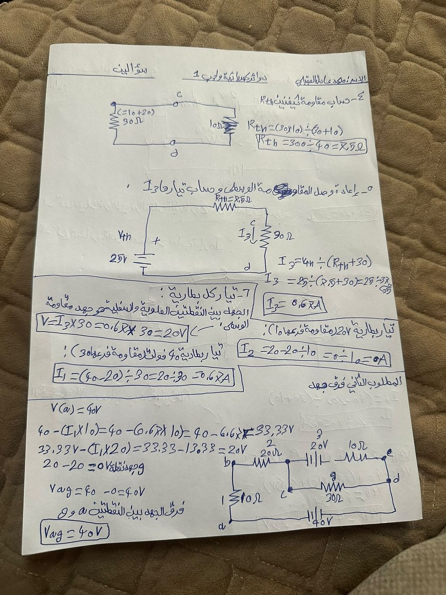
- عند طرفي الحمل (بعد تبسيط 10+20=30Ω موازية 10Ω): Rth = (30×10)/40 = 7.5 Ω
- تيار الحمل 30Ω: I₃ = Vth/(Rth+30) = 25/37.5 = 0.66 A — وجهد الحمل V = 0.66×30 ≈ 20 V (جهد عقدة وليس مصدراً فعلياً).
- التحقق بالعقد: I₂ = (0−20)/10 = −2A و I₁ = (40−20)/30 = 0.66A — عقدة g: 40 − 0.66×10 ≈ 33.3 → 33.3 − 13.3 = 20V ✓ «استطعنا إثبات ذلك» كما كُتب على الورقة.
- أزل 2Ω (الحمل) — تبقى حلقة واحدة: I = (28−10)/(6+3) = 18/9 = 2 A
- Vth بـKVL: Vth − 28 + 6×2 = 0 ← Vth = 28 − 12 = 16 V
- Rth: نقصر المصدرين: Rth = 6∥3 = 18/9 = 2 Ω
- الدائرة المكافئة: 16V توالياً مع 2Ω ثم الحمل 2Ω: نظرياً I = 16/4 = 4A — والسبورة كتبت 3.93A (نتيجة التراكب بقيم مقرّبة — انظر ف13، الصورة 46 حيث 2.28+1.65=3.93A).
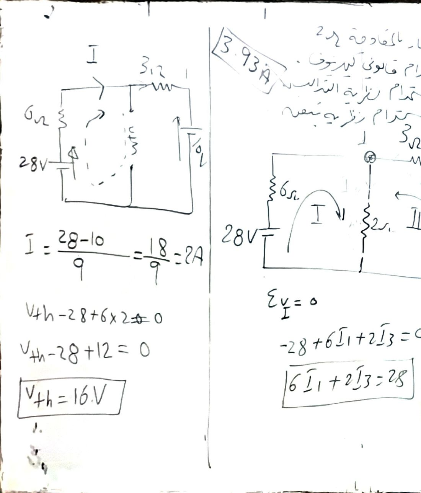
نفس النتائج (I=2A، Vth=16V، الإجابة 3.93A) مع معادلة الحلقة الأولى 6Ĩ₁ + 2Ĩ₃ = 28 — تؤكد أن ثيفنين هنا امتداد لمنظومة كيرشوف نفسها (ف9).
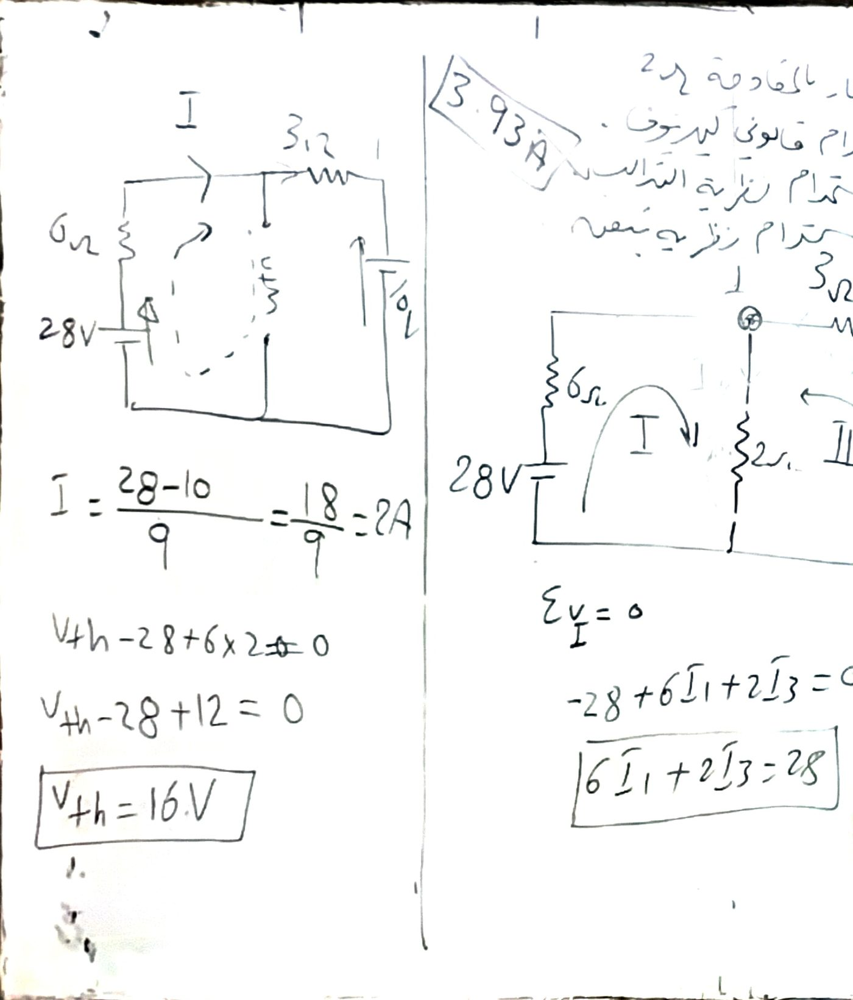
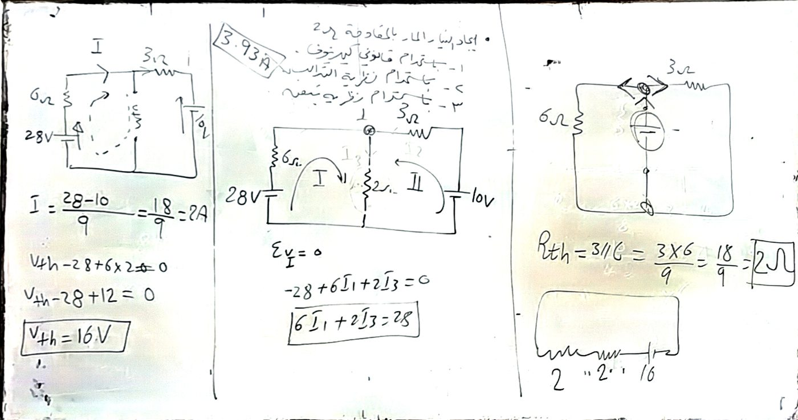
نزّل مقاومة 2Ω (الحمل) — تبقى حلقة واحدة فيها المصدرين و6Ω و3Ω: التيار فيها I = (28−10)/(6+3) = 2A. جهد فتح الحمل: Vth = 28 − 6×2 = 16V. قصر المصدرين: Rth = 6∥3 = 2Ω. فعائد الحمل: I = 16/(2+2) = 4A — نفس جواب كيرشوف بالضبط، وهذي أقوى طريقتين تثبتينها بالامتحان.
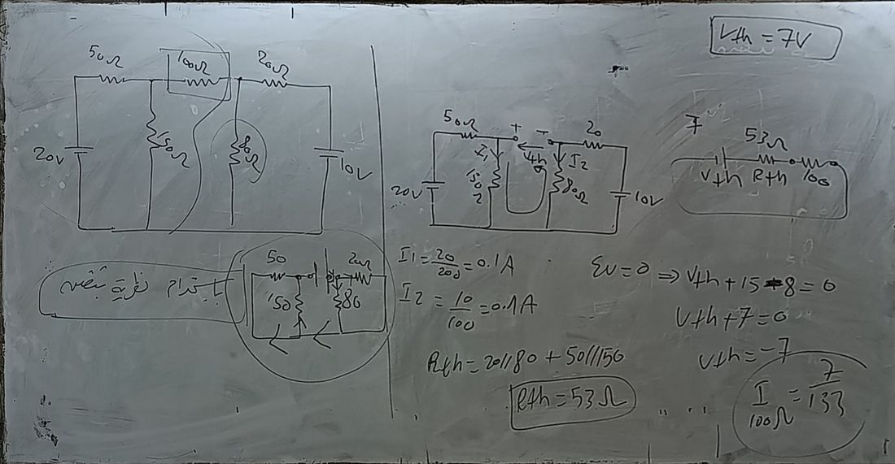
- تيارات الفروع عند فتح الحمل: I₁ = 20/200 = 0.1A و I₂ = 10/100 = 0.1A
- KVL حول الحلقة: Vth + 15 − 8 = 0 ← Vth = −7 والمعتمد 7V بالإشارة المناسبة للقطبية.
- قصر المصادر: Rth = 20∥80 + 50∥150 = 16 + 37.5 = 53.5 ≈ 53 Ω (صورة السبورة أدناه تحسم القراءة: 150 وليس 56)
- مع حمل 100Ω: I = 7/(53+100) = 7/153 ≈ 0.046 A ≈ 46mA
نفس المثال بصياغة «سؤال ثاني» مع حمل 100Ω. ملاحظة وضوح: أرقام هذه اللقطة بخط يد يصعب التمييز فيه أحياناً (5 أم 50؟ 56 أم 156؟) — الطريقة الثلاثية (فتح ← قصر ← قسمة) هي المطلوب منك إتقانها، وهي واضحة 100%.
- أزل الحمل: جهد العقدة = قسمة جهد: Vth = 18 × 12/18 = 12 V
- قصر المصدر: Rth = 6∥12 = 72/18 = 4 Ω
- I = 12/(4+6) = 1.2 A ← VL = 1.2×6 = 7.2 V
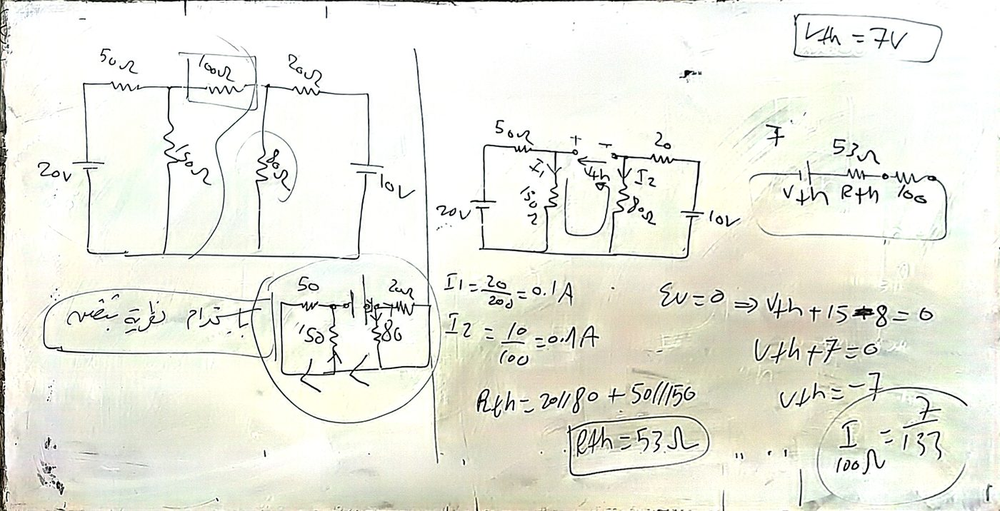
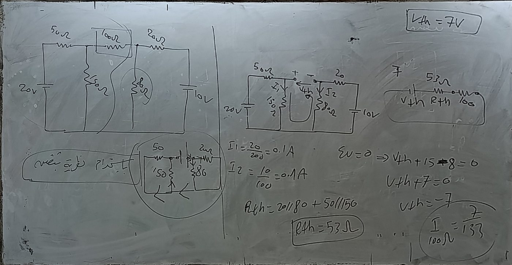
في صور المذكرات رقم 41 و42 كان خط اليد غامق: 56 أم 156؟ السبورة حسمتها: 50∥150 فتصير 16 + 37.5 = 53.5 ≈ 53Ω والتيار النهائي 7/153 ≈ 46mA. احفظ التسلسل: I₁ وI₂ بقسمة جهد ← KVL لل Vth ← قصر لل Rth ← القسمة النهائية.
صورة واحدة (47) لكنها كاملة: نورتن = مصدر تيار IN توازياً مع RN. العلاقة مع ثيفنين: RN = Rth و IN = Vth/RN.
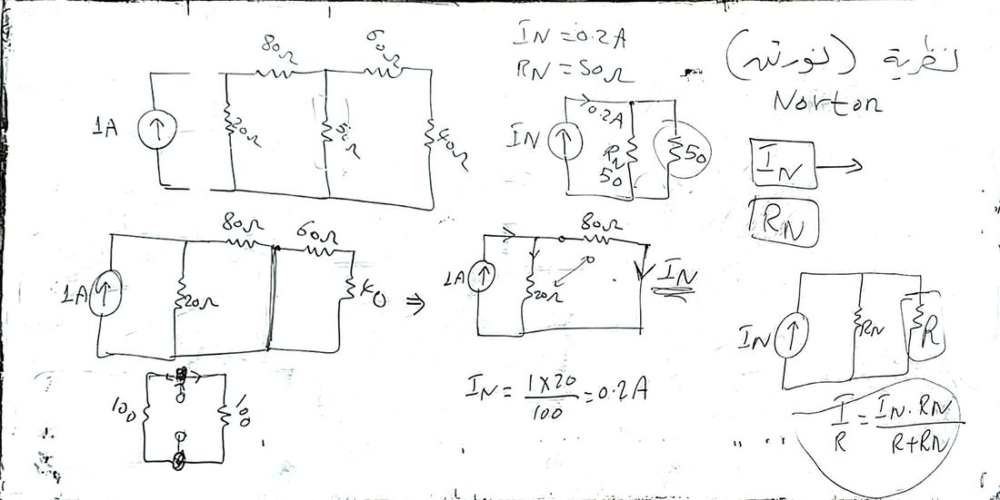
- IN (تيار القصر عند طرفي الحمل): يتوزع التيار 1A بين 20Ω و80Ω: IN = (1×20)/100 = 0.2 A — قسمة التيار (البسط الفرع الآخر!).
- RN (نفتح مصدر التيار): RN = 50 Ω كما حسبها الدكتور من بنية الدائرة.
- تيار الحمل: I = IN·RN/(RL+RN) = 0.2×50/(50+50) = 0.1 A
- IN = تيار القصر = 20/5 = 4 A (عند قصر الحمل تُقصَّر 20Ω معه فتبقى 5Ω فقط)
- RN = 5∥20 = 100/25 = 4 Ω
- IL = 4 × 4/(4+4) = 2 A
على السبورة كتب الدكتور القانون جاهزاً: I = Iᴺ·Rᴺ/(R+Rᴺ) — وهو نفس قسمة التيار: المصدر Iᴺ يرى فرعين توازيين Rᴺ والحمل R. عوّض: 0.2×50/(50+50) = 0.1A. لاحظ السبورة تأكد النتائج نفسها بالصورة 47: Iᴺ=0.2A و Rᴺ=50Ω — تطابق كامل.
صورة 51: عندما تتوازى عدة فروع كل فرع فيه مصدر مع مقاومة — تنهار الدائرة كلها إلى مصدر واحد Eeq مع Req بصيغتين فقط.
10V مع 100Ω و15V مع 50Ω بعكس القطبية: Eeq = (10/100 − 15/50)/(1/100 + 1/50) = (0.1 − 0.3)/0.03 = −6.67 V (الإشارة السالبة تعني القطبية معاكسة للافتراض) و Req = 1/0.03 = 33.33 Ω.
ملاحظة أمانة: على السبورة كُتب بعدها I=15mA — الحساب الدقيق يعطي 6.67/(33.33+10) ≈ 154mA. المهم إتقان الصيغتين والتدقيق بالإشارات.
Eeq = (10/10 + 20/20 + 30/30)/(1/10 + 1/20 + 1/30) و Req = 1/(1/10+1/20+1/30) — نفس الصيغ بثلاثة فروع: 10V/10Ω، 20V/20Ω، 30V/30Ω.
- البسط: 20/10 + 40/20 + 60/60 = 2 + 2 + 1 = 5
- المقام: 0.1 + 0.05 + 1/60 = 1/6 ← Eeq = 5 ÷ (1/6) = 30 V
- Req = 6 Ω ← I = 30/(6+24) = 1 A
ثلاث صور (36، 37، 46): مثال الدكتور 6V/12V بلقطتين، ثم تطبيق التراكب على دائرة 28V/10V الشهيرة — وهو المثال الذي يفسّر رقم 3.93A في ثيفنين.
- الحالة 1 — 6V وحده (نقصر 12V): المسار: 0.5+2.5 توالياً ثم توازي مع 6Ω ثم مع فرع 2+1: R_eq = 3∥6 = 2 ← 2 + 2.5 + 0.5 = 5 Ω ← I′ = 6/5 = 1.2 A
- قسمة التيار: I₁′ = 1.2×3/9 = 0.4 A (فرع 6Ω) و I₂′ = 1.2×6/9 = 0.8 A
- الحالة 2 — 12V وحده (نقصر 6V): I″₂ = 12/5 = 2.4 A — والقسمة: 0.8A و 1.6A
- الجمع الجبري حسب الاتجاهات: تيار 6Ω = 0.4 + 0.8 = 1.2 A — وفرع آخر: 1.6 − 0.4 = 1.2 A بالاتجاه المعاكس (لذا ظهر الرقم (1.6−1.2) محاطاً بدائرة على السبورة).
الدكتور حلها مرتين: مرة نخلي 6V يشتغل واقصر 12V: المقاومة اللي يشوفها (6∥3)+2.5+0.5 = 5Ω فتياره 1.2A ينقسم 0.4 و0.8. ومرة نخلي 12V ويقصر 6V: I″=12/5=2.4A ينقسم 0.8 و1.6. بتجمع التيارات اللي باتجاه واحد وتطرح المعاكسة — م النتيجة المحاطة بالسبورة: التيار الصافي بالفروع = 1.2A و 0.4A و 1.6A.
نفس الحسابات كاملة بوضوح أكبر — استخدمها للتحقق من أي رقم لم تقرأه في 36. ملاحظة الدكتور «(سبق إيجادها)» تعني أن القيمة استُخدمت في خطوة سابقة — انتبه لسلسلة الاستخدام.
- حالة 28V وحده (قصر 10V): R_eq = (3∥2) + 6 = 1.2 + 6 = 7.2 Ω ← I′ = 28/7.2 = 3.89 A ← قسمة: I₁′ = 3.89×3/5 ≈ 2.28 A
- حالة 10V وحده (قصر 28V): R_eq = (6∥2) + 3 = 1.5 + 3 = 4.5 Ω ← I″ = 10/4.5 = 2.22 A ← قسمة: I₁″ = 2.22×6/8 ≈ 1.65 A
- الجمع (نفس الاتجاه عبر 2Ω): I(2Ω) = 2.28 + 1.65 = 3.93 A — هنا ولد الرقم 3.93A المكتوب في ثيفنين (الصورتان 44 و45)!
هذه هي اللقطة اللي بيها انولد رقم 3.93: الدكتور قرّب 28/7.2 إلى 3.8 بدل 3.889 فطلع 2.28+1.65=3.93A. لو خليت الدقة كاملة: 3.889×3/5 = 2.333 و 2.222×6/8 = 1.667 والمجموع 4A بالضبط — وهو نفسه جواب كيرشوف وثيفنين. الخلاصة بالامتحان: لا تقرب إلا بالخطوة الأخيرة (الخطأ رقم 8 بفصل الأخطاء).
- حالة 12V (قصر 24V): R_eq = 3 + (6∥3) = 3 + 2 = 5 Ω ← I′ = 12/5 = 2.4 A ← قسمة: I(6Ω)′ = 2.4×3/9 = 0.8 A
- حالة 24V (قصر 12V): R_eq = 3 + (6∥3) = 5 Ω ← I″ = 24/5 = 4.8 A ← قسمة: I(6Ω)″ = 4.8×3/9 = 1.6 A
- كلا التيارين يمران بـ6Ω بنفس الاتجاه: I = 0.8 + 1.6 = 2.4 A
ثلاث صور (55، 56، 57): صيغة الموصلية G·V = Isc ثم تطبيقها على دائرة بمصادر ثلاثة — والنتيجة الجميلة: عقدة جهدها 6V وتيار فرع يساوي صفراً.
النقطة المرجعية (الأرضي) أسفل — جهدها 0. العقدة ① تتفرع منها ثلاث فروع: [8V+2Ω]، [4V+2Ω]، [6V+3Ω]. نكتب KCL بصيغة الموصلية:
(1/2 + 1/2 + 1/3)·V₁ = 8/2 + 4/2 + 6/3
1.333·V₁ = 8 ← V₁ = 6 V. ثم تيارات الفروع (كل تيار = فرق الجهود ÷ المقاومة):
- V₁ = −2I₁ + 8 ← 6 = −2I₁ + 8 ← I₁ = 1 A
- V₁ = −2I₂ + 4 ← 6 = −2I₂ + 4 ← I₂ = −1 A (سالبة = الاتجاه معاكس لافتراضنا)
- V₁ = −3I₃ + 6 ← 6 = −3I₃ + 6 ← I₃ = 0 — «وجدنا أن التيار يساوي صفر» كما كتب الدكتور!
- G₁₁ (القطر الرئيسي): مجموع موصلية العناصر المتصلة بالعقدة 1 فقط (الموصلية = 1/المقاومة).
- G₁₂ و G₂₁: الموصلية المشتركة بين العقدتين — تُكتب بإشارة سالبة.
- Isc1: مجموع التيارات الداخلة للعقدة 1 من المصادر.
تهيئة نفس دائرة الصورة 55 قبل الحل: G₁₁ مجموع الموصلات، G₁₂ سالبة، «القيم المطلوبة نأخذها بالتعويض». وهي تلقّنك ترتيب كتابة المعادلة قبل الحساب — وهو ما تُمنح عليه درجة الطريقة.
- (1/2 + 1/2 + 1/3)V₁ = 12/2 + 6/2 + 3/3 ← (4/3)V₁ = 6 + 3 + 1 = 10
- V₁ = 10 × 3/4 = 7.5 V
- I₁ = (12−7.5)/2 = 2.25 A — I₂ = (6−7.5)/2 = −0.75 A — I₃ = (3−7.5)/3 = −1.5 A
- تحقق KCL: 2.25 − 0.75 − 1.5 = 0 ✓
ثلاث صور (58، 59، 60): مثال مكتمل 2×2، ومثالان 3×3. كرامر = بديل الآلة الحاسبة: I₁ = Δ₁/Δ — استخدمها لتفحص إجابة الآلة، أو إذا نسيت خطوات الآلة.
- المنظومة: 10I₁ + 15I₂ = 25 و 5I₁ + 16I₂ = 12
- Δ = 10×16 − 15×5 = 160 − 75 = 85
- Δ₁ = 25×16 − 15×12 = 400 − 180 = 220 (بدّل عمود I₁ بعمود النواتج)
- Δ₂ = 10×12 − 25×5 = 120 − 125 = −5 (بدّل عمود I₂)
- I₁ = 220/85 ≈ 2.59 A و I₂ = −5/85 ≈ −0.06 A
منظومة ثلاثية: 2I₁+3I₂+6I₃=18، −4I₁+5I₂+I₃=10، 2I₂−3I₃=12 — وحُسب المحدد الرئيسي بقاعدة ساروس (الأقطار الموجبة ناقص السالبة): Δ = −118 كما كُتب. الخطوة التالية (Δ₁) لم تكتمل على السبورة — لكنك لا تحتاجها: بكرامر 3×3 استعن بالآلة مباشرة (Mode 5-1).
منظومة 2I₁+3I₂+6I₃=8، −4I₁+5I₂+I₃=10، 2I₂+3I₃=12 مع تهيئة Δ₁ وΔ₂. كلمة «بديل» أسفل الورقة = تذكير الدكتور أن كرامر بديل عن الآلة وليس إلزامياً. نصيحة مركزة: بالامتحان استخدم الآلة (أسرع)، وكرامر للتحقق السريع في 2×2 فقط.
- Δ = 10×8 − 5×4 = 80 − 20 = 60
- Δ₁ = 25×8 − 5×16 = 200 − 80 = 120
- Δ₂ = 10×16 − 25×4 = 160 − 100 = 60
- I₁ = 120/60 = 2 A و I₂ = 60/60 = 1 A
ثلاث صور (38، 39، 40): مصدر تيار 1A ومصدر جهد 9V في دائرة واحدة — الحل: عامل كل مصدر على حدة أو استخدم R_eq وقسمة التيار بذكاء.
- R_eq = (200∥600) + 300 = 150 + 300 = 450 Ω
- حالة مصدر الجهد 9V: I_T = 9/450 = 0.02 A = 20 mA — ثم قسمة تيار بين 200Ω و600Ω: I(200) = 0.02 × 600/800 = 0.015 A = 15 mA
- حالة مصدر التيار 1A: يقسم بين فرع 200Ω وفرع (300∥600=200Ω) — الفرعان متساويان! فكل واحد يأخذ 0.5 A
- الجمع الجبري في مقاومة 200Ω: 15 mA + 500 mA = 515 mA (كما جمعها الدكتور على السبورة).
هذه لقطة السؤال فقط قبل كتابة الحل — فيها الشبكة كما ستُعطى لك: 1A يسقي الفروع، و300Ω مع مصدر 9V. تمرّن على قراءة الرسم قبل الحل: حدد العقد أولاً.
تكرار لنفس الحسابات يؤكد النتائج (R_eq=450Ω، I_T=0.02A، 515mA). الرسمة الوسطى فيها تلحي على فكرة تحويل المصادر (نحو ثيفنين/نورتون) — تذكّر: مصدر جهد يتحول لنورتن بقسمة V على المقاومة التوالية.
- 400∥600 = 240000/1000 = 240 Ω ← R_eq = 240 + 360 = 600 Ω
- I_T = 12/600 = 0.02 A = 20 mA
- I(400) = 20 × 600/1000 = 12 mA — I(600) = 20 × 400/1000 = 8 mA (تحقق: 12+8=20 ✓)
عامل كل مصدر لحاله: 9V وحده يشوف (200∥600)+300 = 450Ω فيمر 0.02A وياخذ الحمل 15mA. وبعدين 1A وحده ينقسم بين فرع الحمل 200Ω وفرع (300∥600=200Ω) — الفرعان متساويان فكل واحد ياخذ 0.5A. اجمع: 500+15 = 515mA — نفس الرقم المحاط بالسبورة حرفياً.
صورتان (49، 50): الصيغ الست لتحويل Δ↔Y، ثم تطبيقها ضمن «واجب منزلي» على جسر قياس فيه جلفانومتر 50Ω — مع فكرة أن الجسر المتوازن يُبسط بدون تحويل.
حيلة حفظ: Δ→Y: البسط ضرب المقاومتين المجاورتين والمقام المجموع. Y→Δ: البسط مجموع حواصل الضرب الزوجية والمقام المقاومة المقابلة. Δ متساوية R ← Y كلها R/3.
- ذراعان: (10+10)=20Ω و (15+5)=20Ω — توازي بينهما: 20∥20 = 10 Ω
- مع 6Ω التوالية: R_eq = 10 + 6 = 16 Ω
- I_T = 8/16 = 0.5 A — يتوزع بالتساوي: 0.25 A لكل ذراع (لأنهما متساويان).
- KVL بين B وD: VBD − 0.25×15 + 0.25×10 = 0 ← VBD = 3.75 − 2.5 = 1.25 V
- تيار الجلفانومتر: IG = VBD/RG = 1.25/50 = 0.025 A = 25 mA
- (أ) دلتا متساوية ← نجمة متساوية: R_Y = 6/3 = 2 Ω لكل مقاومة.
- (ب) 12∥12 = 6 Ω ← R_eq = 6+4 = 10 Ω ← I_T = 8/10 = 0.8 A ← 0.4A لكل ذراع
- VBD = 0.4×9 − 0.4×6 = 3.6 − 2.4 = 1.2 V ← IG = 1.2/50 = 24 mA
الصورة 48 ورقة امتحان/واجب رسمية (جامعة الأنبار — كلية الهندسة) بسؤالين كاملين، والصورة 53 هي الحل النموذجي لسؤالها الثاني. هذه أقرب عينة لشكل ورقة امتحانك.
س1 — دائرة متشابكة: مصدران 20V و40V بمقاومات 20Ω و10Ω و10Ω و30Ω وعقد مرمزة a–k. المطلوب: (1) تيار كل مقاومة (2) الفرق بين نقطتين Vag. الاستراتيجية: بسّط بالتوازي/التوالي → I_T → قسمة تيار → ثم Vag بجمع الجهود على أي مسار من a إلى g (نفس أسلوب Vxy في ف7).
س2 — المولد: أميتر 1.6A وفولتميتر 3.08V عند إغلاق المفتاح. المطلوب: القوة الدافعة ε والمقاومة الداخلية r والمقاومة الخارجية R — والحل كامل في الصورة التالية.
- القانون الأساسي للمولد (تفريغ): V = ε − I·r — جهد الأطراف أقل من القوة الدافعة بهبوط داخلي.
- من الورقة: الفرق ε − V = 0.11 V ← r = (ε − V)/I = 0.11/1.6 ≈ 0.068 Ω
- المقاومة الخارجية: R = V/I = 3.08/1.6 = 1.925 Ω
- التحقق: ε = V + I·r = 3.08 + 0.11 = 3.19 V — متسق تماماً.
- r = (ε−V)/I = 0.2/2 = 0.1 Ω
- R = V/I = 4.8/2 = 2.4 Ω
- ε = V + I·r = 4.8 + 0.2 = 5 V
خمس صور من سبورة الدكتور (14/10) بموضوع لم يكن بالدفتر سابقاً: المحول + الجسر + المكثف. الدائرة ترسم مرة واحدة وتُحل بثماني خطوات ثابتة الترتيب — احفظ الترتيب وتقدر تحل أي مسألة تقويم بلا تفكير.
تخيّل التيار المتردد مضخة تدفع مرة للأمام ومرة للخلف. الديود صمام يسمح بالمرور باتجاه واحد ويسقط عليه 0.7V. في الجسر رتّبنا 4 ديودات بحيث يمرر الاتجاهين كلاهما لنفس المخرج — لذلك نفقد ديودين معاً = 1.4V. أما المكثف فيشحن عند القمة ويتفريغ ببطء على المقاومة، فيبقى الجهد قريباً من القمة بدل النبض إلى الصفر.
- 1) قمة الابتدائي: V_p(pri) = √2 × V_rms = √2 × 115 = 162.6 V
- 2) قمة الثانوي: V_psec = 162.6 ÷ 10 = 16.26 V
- 3) قمة الخرج (ديودان): V_po = 16.26 − 1.4 = 14.86 V
- 4) المتوسط: V_avg = 2V_po/π = 2×14.86/3.14 = 9.4 V
- 5) تردد التموج: f_o = 2×f_in = 2×60 = 120 Hz
- 6) التموج ذروة-ذروة: V_r(pp) = V_po/(f_o·R·C) = 14.86/(120 × 2.2×10³ × 50×10⁻⁶) = 14.86/13.2 = 1.12 V
- 7) الجهد المستمر: V_DC = V_po − ½V_r(pp) = 14.86 − 0.56 = 14.3 V
- 8) نسبة التموج: r% = V_r(pp)/V_DC × 100 = 1.12/14.3 × 100 ≈ 7.9%
الثانوي ينقسم نصفين: كل نصف يعطي V_psec/2، وفي المسار ديود واحد فنطرح 0.7V: V_po = V_psec/2 − 0.7. بقية الخطوات (المتوسط، التردد، التموج، VDC) بنفس القوانين حرفياً — على السبورة كتبها الدكتور بنفس الترتيب وبقي باقي الحل مسطّراً للتدريب الذاتي.
- V_p(pri) = √2 × 240 = 339.4 V
- V_psec = 339.4 ÷ 20 = 16.97 V
- V_po = 16.97 − 1.4 = 15.57 V
- V_avg = 2×15.57/π = 9.91 V
- f_o = 2×50 = 100 Hz
- V_r(pp) = 15.57/(100 × 1000 × 100×10⁻⁶) = 15.57/10 = 1.56 V
- V_DC = 15.57 − 0.78 = 14.79 V
- r% = 1.56/14.79 × 100 ≈ 10.5%
- V_po = V_psec/2 − 0.7 = 16.97/2 − 0.7 = 8.49 − 0.7 = 7.79 V
- لاحظ: الخرج تقريباً نصف الجسر — لأن كل نصف ملف يعمل بمفرده ويخسر ديوداً واحداً فقط.
هذا القسم هو ما تفتحه في ليلة الامتحان بعد ما تكون خلصت كل الفصول.
الأساسيات
التوصيلات
كيرشوف والطرق النظامية
النظريات الأربع
التقويم — جديد ⭐
المولد والقياس
نتائج جاهزة من صور الدكتور
الليل 1 — الأساس + المسألة الامتحانية
ف1–ف4: البادئات، الطاقة، أوم، ومسألة السخان (حلها 3 مرات حتى تحلها بلا ورقة). ثم ف5–ف6: التوالي والتوازي وقسمة الجهد والتيار + تدريباتها.
الليل 2 — قلب المادة
ف7: المسألة الكبرى كاملة (تيار + Vxy + قدرة) — حل التدريب 7 بنفسك كاملاً. ثم ف8 (المصدرين والفولتميتر) وف9 (كيرشوف والمنظومة الثلاثية).
الليل 3 — النظريات الأربع
ثيفنين (3 خطوات مقدسة) ← نورتن ← ميلمان ← التراكب. حل تدريب 10 و11 و12 و13. لاحظ كيف يلتقي كل شيء عند رقم 3.93/4A.
الليل 4 — الطرق النظامية + التقويم + الملاحق
ف14–ف17: العقد والكرامر ومصدر التيار والجسر. ثم ف19 التقويم: احفظ الخطوات الثماني بالترتيب وحل التدريب 19 بنفسك. بعدها ورقة القوانين الذهبية والأخطاء الثمانية. جرب حل ورقة الامتحان (ف18) سؤالها الأول بنفسك.
ليلة الامتحان
ورقة القوانين الذهبية فقط + النتائج الجاهزة من صور الدكتور + تنام بدري. الثقة جاية من إنك حلّت بيدك — مو من إنك قريت مرتين.